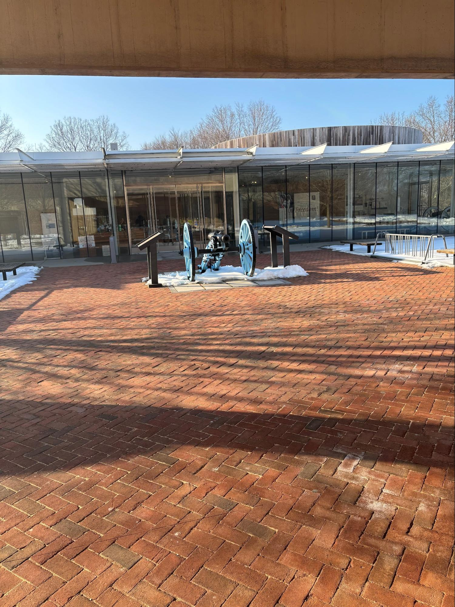

This place has some very interesting history behind it, dating back into the Revolutionary War.
This place was where the longest one day battle in the war happened, The Battle of Momouth.
in 1778, June 28, right after the winter at Valley Forge, George Washington to decided to strike
when the iron was hot, specifically a blistering 110° day in NJ.
The continental army was outnumbered 2 to 1, and even though some things went wrong.
George Washington managed to take the win because the British had enough and retreated to NYC
Nowadays the place is used for fun activities such as hiking or picnicking. However the place is still memorized for this epic battle, a recreation is held once every year.